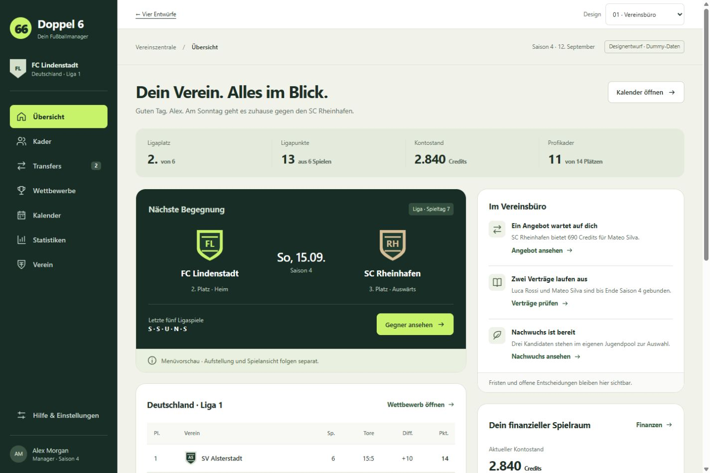
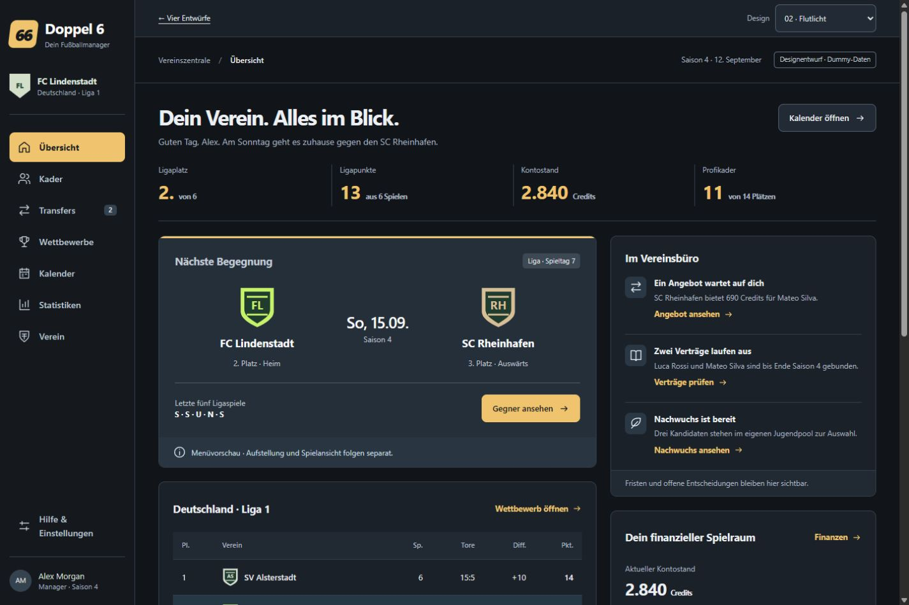
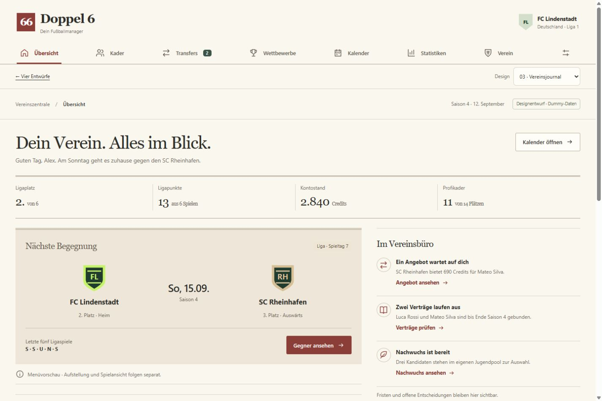
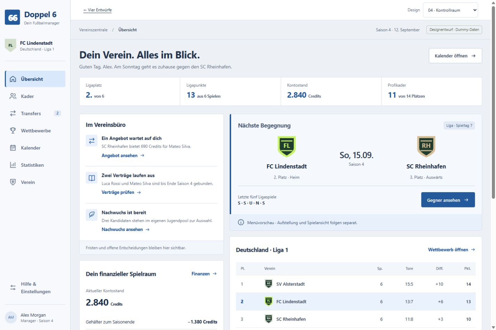

01
Vereinsbüro
Ruhig, vertraut und großzügig. Vereinsgrün, weiche Flächen und eine feste Seitennavigation.

Fokus: Orientierung & Ruhe
Entwurf öffnenEin Verein. Vier Perspektiven.
Gewählt ist Flutlicht – jetzt mit hellem und dunklem Modus. Die vier ursprünglichen Richtungen bleiben hier zum Vergleich erhalten: gleiche Beispieldaten, mobil bedienbar und ohne Spieldarstellung.
FC Lindenstadt · Identische Inhalte in allen Entwürfen
Ruhig, vertraut und großzügig. Vereinsgrün, weiche Flächen und eine feste Seitennavigation.

Fokus: Orientierung & Ruhe
Entwurf öffnenDunkel, sportlich und konzentriert. Graphitfarbene Flächen mit warmen Akzenten für Zahlen und Aktionen.

Fokus: Kontrast & Atmosphäre
Entwurf öffnenHell, redaktionell und eigenständig. Papierfarbene Flächen, markante Überschriften und ein offenes Layout.

Fokus: Lesefluss & Charakter
Entwurf öffnenKlar, kompakt und sachlich. Blaue Akzente, helle Navigation und Entscheidungen direkt im Blick.

Fokus: Datendichte & Tempo
Entwurf öffnen